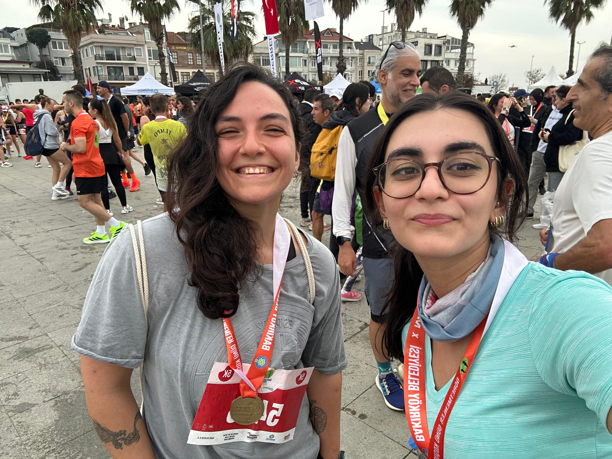

Race Record
Event: Bakırköy Belediyesi Öğretmenler Günü Koşusu
Distance: 5 km
Date: 23 November 2025
Finish time: 30 minutes
Photo

5 km · 23 November 2025 · 30 minutes
Event: Bakırköy Belediyesi Öğretmenler Günü Koşusu
Distance: 5 km
Date: 23 November 2025
Finish time: 30 minutes
